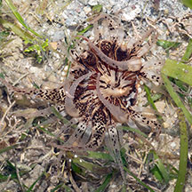
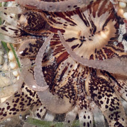
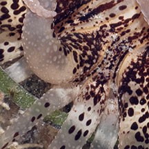
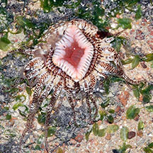
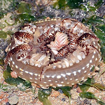
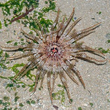
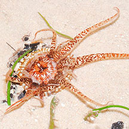
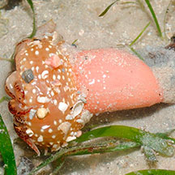
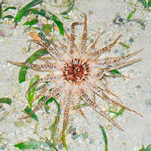

|
|
| sea anemones text index | photo index |
| Phylum Cnidaria > Class Anthozoa > Subclass Zoantharia/Hexacorallia > Order Actiniaria |
| Rough
anemone Macrodactyla aspera Family Actiniidae updated Jul 2023 Where seen? This anemone is sometimes seen on sand and seagrasses on our Northern shores. Aspera means 'rough' in Latin. Features: Diameter with tentacles extended 20cm or more. The oral disk 5-8cm in diameter. Tentacles not many. About 48 long tentacles (10cm) translucent, on the upper side covered in scattered small brown spots. Oral disk with thick brown splotches radiating outwards, mouth edge white. The upper body column has rows of bumps (verrucae) that are sticky - bits of sand and stuff often stuck on them. Sometimes confused with the Glass anemone which has more transparent tentacles that lack the small brown spots and has black rings where the tentacles attach to the oral disk, the oral disk does not have dark brown blotches, and does not have many rows of sticky bumps on the body column. Status and threats: There is inadequate information as at 2024 to make an informed assesment of its conservation status in Singapore. |
 Cyrene, Feb 15 |
 Brown splotches radiating out. |
 Small brown spots on upper side of tentacles. |
 White 'lips' Pulau Sekudu, Jun 18 Photo shared by Loh Kok Sheng on facebook. |
 White bumps on the upper body column. Pulau Sekudu, Jun 18 Photo shared by Loh Kok Sheng on facebook. |
| Rough anemones on Singapore shores |
On wildsingapore
flickr
|
| Other sightings on Singapore shores |
 Pulau Sekudu, Jun 14 |
 Cyrene Reef, Jun 11 |
 |
 Cyrene Reef, Aug 13 |
References
|